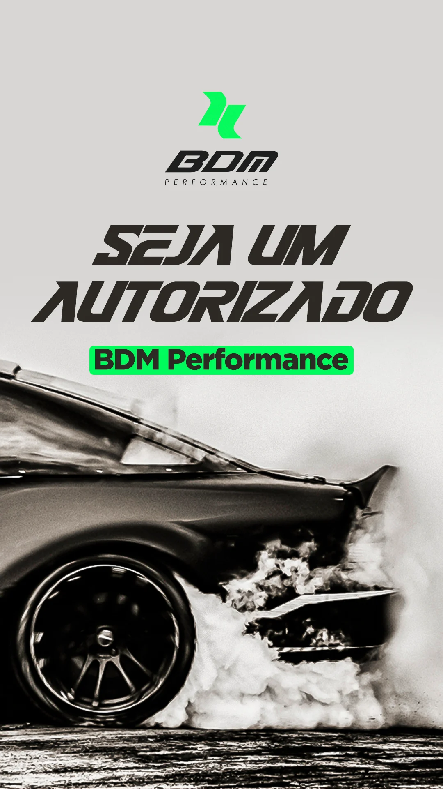

Falar com o parceiro certo
Oficina, representante regional, gestor de frota ou produtor rural, com mensagem coerente com cada necessidade.
Esta página organiza as peças originais fornecidas pela BDM e define princípios para futuras variações, sem inventar fotos, resultados ou promessas.

O manual de copy descreve os públicos e a oferta. As anotações de reunião também registram correções que evitam claims absolutos sobre exclusividade de software e ausência de retrabalho.
Oficina, representante regional, gestor de frota ou produtor rural, com mensagem coerente com cada necessidade.
Não publicar percentuais de potência, economia, prazo ou garantia sem validação técnica e aprovação da BDM.
Usar verde, grafite e neutros. Não aplicar vermelho como cor proprietária da BDM.
As peças existentes são referências fornecidas pelo cliente, não prova de que a oferta ou as condições comerciais permanecem vigentes.